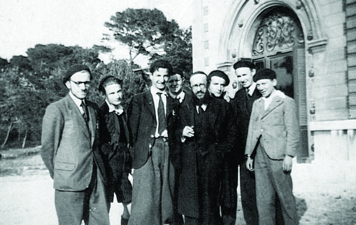

The Golden Link
R’ Chaim Menachem Teichtel a”h, one of the senior, distinguished Chabad Chassidim in Yerushalayim, passed away on Isru Chag Pesach at the age of 92. * He miraculously survived the war and upon moving to Eretz Yisroel, he worked in chinuch for decades.

It was during the hakafos on Simchas Torah when, among the thousands of people, R’ Chaim Menachem Teichtel shed a tear. The Rebbe noticed this and made an encouraging motion with his hand to increase the simcha. A few days later, the Rebbe asked him why he had cried.
This tear of joy expressed the uplifted feeling of a Chassid who had been separated from his parents at a young age in Slovakia after the Nazis invaded and who had then been chased throughout the war years as he supervised a secret orphanage.
Although he lost his father and brothers in the war, he did not sink into despair. With the encouragement of the Rebbeim, he worked in the field of chinuch and published his father’s writings, despite the difficulties and obstacles he was faced with. He raised a beautiful Chassidishe family, seeing his sons, grandsons and many descendants following the way of Torah and mitzvos.
PERSECUTION
AND OPEN MIRACLES
R’ Chaim Menachem Teichtel was born on 24 Nissan 5682/1922 in Pishtian Czechoslovakia. His father was R’ Yissochor Shlomo Teichtel, may Hashem avenge his blood. He was named Menachem, but after he was stricken with diphtheria as a child and his condition was serious, his father added the name Chaim.
His father was well known as an important posek, prolific writer and superlative speaker. He published his halachic decisions in a series of responsa called Mishneh Sachir. It was this work that earned him the name of a great gaon and posek. He led Yeshivas Moriya that he founded in 5684 in which outstanding b’nei yeshiva were educated in Torah and Chassidus. R’ Chaim Menachem learned in his father’s yeshiva in his youth, with his father looking after him with great love and implanting in him love for Torah and fear of heaven.
In 5698/1938 the Nazis began taking control of Czechoslovakia. The country was divided into sections. “Slovakia” is where the Teichtel family lived. At a certain point, the Nazis forced him and his older brother, Dovid, may Hashem avenge his blood, to walk in a public display in the street holding humiliating signs while the gentiles gawked and laughed. Despite this, his brother sang, “Blessed is He, our G-d, who created us for His glory, and separated us from those who stray,” while Chaim Menachem cried bitterly and could not bear the abasement.
When his father saw that the situation for the Jews had worsened, he sent his two sons with their mother to Antwerp to his brother-in-law, the rav of Antwerp, Rabbi Mordechai Rottenberg, may Hashem avenge his blood. After their mother found a safe place for her children, she returned home. Her oldest son, Meir, may Hashem avenge his blood, was already in the city before them. Sixteen year old Chaim Menachem and his brothers began learning in Yeshivas Eitz Chaim in Heide near Antwerp.
When Hitler conquered Belgium in the spring of 1940, the students of the yeshiva, including the three Teichtel brothers, escaped to France. The Germans then conquered parts of France, rounded up the Jews, and held them in a camp with the intention of sending them to Auschwitz. They were able to escape the camp and Chaim Menachem found himself in Marseilles again, which was also under Nazi rule. He found a hiding place in a local hotel.
One night, local police, who collaborated with the Nazis, entered the hotel. Based on the information in the hotel office, they identified the Jews and began reading off their names. Whoever had his name called, was arrested and taken to a labor camp. Chaim Menachem was experienced and when his name was read, he did not respond. A short while later, the police noticed him and asked him why he hadn’t come when his name was called. He said he was sick. Two policemen remained to guard him while they called for a doctor who declared that he was “very sick.” R’ Chaim Menachem always said that this doctor was none other than Eliyahu HaNavi.
The “sick” bachur was taken to a hospital, but once there he claimed he was healthy. After a few days in which they conducted tests, he was released.
He quickly left the place and miraculously heard about an orphanage that was founded by R’ Zalman Schneerson. He managed to get there and was accepted as a counselor. After some time, he was appointed as the director of the girls’ division.
DANGER AND RESCUE
AT THE LAST MOMENT
R’ Zalman Schneerson, the cousin of R’ Levi Yitzchok Schneerson, the Rebbe’s father, was an important askan in Russia in the early years. He immigrated to France in the 1930’s and there too, he was an important communal figure and a respected Torah personage. During the Holocaust, he founded and ran institutions for orphaned children, remnants snatched from the fire of war and extermination. Since France was occupied by the Nazis and their collaborators, R’ Zalman had to move his institutions from place to place. For a period of time they were located in a castle in a forest.
R’ Chaim Menachem joined R’ Zalman in this work and met other youths like himself, students of yeshivos in Europe who had arrived there, including R’ Aharon Mordechai Zilberstrom, R’ Nachum Yakobovitz, and R’ Dovid Moshe Lieberman who was later the rav of Antwerp. They became good friends and strengthened one another as they continued in the path of Torah and Chassidus. Under the influence of R’ Schneerson, they became acquainted with Chabad Chassidus and later became Chabad Chassidim.
While R’ Chaim Menachem hid in the orphanage, his father wandered through Europe and managed to hide from those who sought him. R’ Chaim Menachem said about this period of time:
“My holy father was connected with the Torah greats in halachic debate even during the war years. The light of Torah did not fade for him and at the height of the great concealment, he did not stop writing responses to those who sent him questions. He especially sought solutions to the halachic problems that arose due to the decrees of the evil ones such as the question about using gentile milk. In a clear voice he warned that according to the Torah, it was forbidden to buy conversion certificates. In addition to clarifying halachos, he showered his flock with words of inspiration and strength in his fiery sermons, which strengthened the hearts of the broken and oppressed.”
During those terrible times, R’ Menachem wrote to his father, and his father, in his great wisdom, realized that his son was continuing in the way he had been raised and he responded, “I cannot describe to you what joy this caused me, because although it is many years that you have been uprooted from my midst, from when you were but a boy, however, despite all this, you did not veer from the path of Hashem. And you are going alone with strength and confidence, even in this great and lowly world, in the holy way and are saturated with fear of heaven as it is apparent from your lofty letter. I feel in this matter above and beyond extremely fortunate for this is my wealth and joy, that my children march in the path of Hashem forever and eternity.”
When R’ Chaim Menachem informed his father that he received influence in the service of Hashem from R’ Zalman Schneerson, a Chabad Chassid, his father wrote in an emotional letter which was also his last letter:
“My dear, precious Chaim Menachem, we received your postcard and your letter with great joy after much anticipation. I feel in this matter above and beyond extremely fortunate for this is my wealth and joy to see my children going in the ways of Hashem forever and eternity. Give my thanks to your rebbi [R’ Zalman Schneerson], the grandson [=descendant] of Rabbeinu Baal HaTanya, whose holiness and pure spirit are reflected in you.”
R’ Yissochor Shlomo Teichtel miraculously survived for a number of years, but ultimately was caught and taken to Auschwitz. As the Allies approached the extermination camps, groups of Jews were placed on a train, including R’ Teichtel who was placed on a train that also had Ukrainian prisoners. One of them beat him to death when he defended a fellow Jew who had a piece of bread stolen from him.
***
R’ Schneerson’s orphanage went through many travails as the students wandered and hid, while suffering from extremely difficult living conditions. R’ Chaim Menachem was constantly with them. He told of those moments of terror which were etched in his heart:
“When we were in the orphanage by R’ Schneerson, the French police showed up. R’ Zalman was a French citizen but we were foreigners and they were looking for us. At that time, the French police were part of the Nazi hierarchy and the danger was great. R’ Zalman quickly put us – me and my friends, R’ Aharon Mordechai Zilberstrom and R’ Dovid Moshe Lieberman, into the cellar. The policemen searched floor after floor of the building where the orphanage was, and after hours of meticulous searching came to the door of the cellar and tried to open it. The three of us lay there motionless, terrified. We heard the policemen asking R’ Zalman what was in the cellar. Without missing a beat, he told them the cellar was packed with old books and nobody was there. They listened to him and believed him. They were also tired of the long search and left. We were saved.”
FIRST ENCOUNTER
WITH THE REBBE
The war ended by the summer of 1945 and the orphanages moved to Paris. R’ Chaim Menachem continued running the institute for girls with great success. In 5707, groups of Lubavitcher Chassidim began leaving Russia and some of them settled in Paris. This was a good opportunity for R’ Chaim Menachem to continue learning Chassidus with some of the celebrated Chassidim who had arrived in France. Among the group of refugees was also Rebbetzin Chana, the Rebbe’s mother. The Rebbe (to-be) himself traveled to France in order to escort her to the United States. This was when R’ Chaim Menachem saw the Rebbe for the first time and he was greatly impressed.
He later said that until that time, he was used to seeing Admurim and rabbanim and their families dressed in rabbinic garb, while the Rebbe Rayatz’s son-in-law arrived in Paris wearing a short jacket and ordinary hat. Yet, R’ Chaim Menachem was amazed by the noble countenance of the Rebbe and realized that he was seeing a holy man of G-d:
“On the one hand, he dressed simply and showed no external signs; on the other hand, everyone saw that he was a man of G-d.”
R’ Teichtel loved to wax nostalgic over his memories of the visit of 1947 and would say that the Rebbe sat the entire time in the hotel and learned and davened. Except for when he went out to t’fillos and visits to his mother, he did not leave the hotel.
One day, the Rebbe visited R’ Zalman Shneerson’s orphanage and spoke to the children, as R’ Chaim Menachem related:
“During the visit, the Rebbe spoke to the children and inspired them to avodas Hashem with love and joy. The counselors discussed amongst themselves, based on different sources, wondrous stories about the personality and holiness of their guest, the son-in-law of the Rebbe Rayatz. Eye witnesses said that on Pesach he did not eat throughout the holiday except for the obligatory k’zayis of matza at the s’darim and at the Shabbos and Yom Tov meals, and fruits.”
The evening the Rebbe left Paris, a farewell farbrengen was held in which the Rebbe interpreted the names of all those present according to kabbala, including the name of R’ Chaim Menachem.
SUCCESS WITH HIS PEN
While in Paris, R’ Chaim Menachem married Chaya Feigel, the daughter of R’ Yehuda Bransdorfer. Upon receiving the Rebbe Rayatz’s bracha, they moved to Eretz Yisroel. He took a job teaching in the Shiloh school which was attended by religious boys of all sectors. He taught for nearly thirty years, putting all his energies into chinuch.
Over the years, he wrote and published Yalkut HaShemitta to make it easier for pupils to understand the laws of Shmita, and Nesivos Chaim on a variety of Jewish topics, to make it easier for teachers and students to learn fundamental subjects in daily life. He also published articles on education and other important topics.
The Rebbe gave him a bracha for his writing, “In connection with your birthday, a year of success in material and spiritual matters, including, of course, success in your writing for the benefit of many.”
R’ Chaim Menachem was esteemed by his students and even decades later, they still refer to him with admiration, praising his good heart and devotion and his yiras Shamayim.
THE TEAR THAT
THE REBBE NOTICED
He visited 770 in Tishrei 5727. He wrote his impressions in an emotional article which was published in a Chabad publication. Here is an excerpt which shows the special attention the Rebbe gave him:
“On Simchas Torah, when the Rebbe danced with the Torah and the atmosphere which encompassed us all was saturated with pure Chassidic joy, for some reason, a tear fell from my eye. I quickly wiped it with my hand so it wouldn’t blur my vision and obscure my focus on the face of holiness. Then the Rebbe raised his holy hand, as is his holy way, to increase the singing and joy. I did not believe that he was signaling to me.
“At the distribution of kos shel bracha on Motzaei Shabbos B’Reishis, at four in the morning, after giving me kos shel bracha, the Rebbe said, ‘a lot of simcha.’
“Before I left, the night of 28 Tishrei, at 4:30 in the morning, when I entered for yechidus, the Rebbe noted: I noticed that on Simchas Torah your face was not the way it ought to be.
“I apologized and said they were tears of excitement. ‘If they were of joy,’ said the Rebbe, ‘and there was some pleasure involved, then they are permitted on Shabbos and Yom Tov.’ He then took a Tanya from his drawer and gave it to me as a memento so I would not forget everything that I saw in the Rebbe’s presence, even in the period of ‘and Yaakov went on his way,’ as the Rebbe said. It would confer strength to carry out, in daily life, everything we absorbed during the seventh month.
“Whenever I find myself in a difficult situation, I make an effort to conjure up in my imagination the magnificent sight when I stood in the Rebbe’s holy chamber with his blessing and instructions echoing in my ears: Only with simcha. And then I experience relief.”
PRINTING HIS
FATHER’S S’FARIM
The Rebbe encouraged R’ Chaim Menachem to print his father’s s’farim, those already printed in the past and those that were still in manuscript form. He was given these instructions in yechidus and in the years to come when he went for dollars.
Among the s’farim were parts of the responsa Mishneh Sachir which were printed before the war and considered an important halachic work. But since most of the copies were destroyed during the Holocaust, it was necessary to reprint it. So too with the book Eim HaBanim S’meicha, which was printed by his esteemed father in 5703 during the Holocaust. But the greatest importance was given to the manuscripts that survived the war. They were written before the war, went through many upheavals and miraculously survived.
How did they survive through the war? R’ Chaim Menachem wrote about this in the introduction to Mishneh Sachir on the Torah, which was printed from a manuscript:
“My father begged us to hide his work, the treasured writings which he worked on all his life, with a gentile outside the city, and whoever would return from the vale of tears would make the effort to get them from him in order to disseminate them. My sister, Hindel Kloizner, was able, with superhuman effort, to carry out my father’s wishes and she hid the manuscripts in some suitcases with a gentile. In the merit of fulfilling our father’s request, she survived the war miraculously.
“At the end of the war, my sister endangered her life and returned to the hiding place, to the attic, and took with her the manuscripts through her many journeys until she arrived at a safe place.
“Her wonderful son, R’ Yissochor Dov Kloizner, upon whom hovers the spirit of his grandfather, the author, through night and day, swims in the powerful waters of the writings so they come to light in a beautiful and appealing manner.”
TWO DAYS
BEFORE HIS BIRTHDAY
R’ Teichtel’s health deteriorated recently and on Tuesday, 22 Nissan 5774, two days before his 92nd birthday, he passed away. He is survived by sons and daughters, grandchildren and great-grandchildren, descendants who go in the path of Torah and mitzvos and the ways of Chassidus. His children are: Yissochor Shlomo – US; Dovid – shliach in Natzrat Ilit; Yosef Yitzchok Meir – Rosh Kollel and author in France; Esther Bistritzky – Tzfas; Gitta Wolpo – Netanya; Bracha Levin – France.
With thanks to R’ Yissochor Dovid Kloizner for his help and R’ Menachem Ziegelboim.
CONNECTIONS WITH CHABAD
Not only R’ Chaim Menachem Teichtel drew close to Chabad, but also his older brother, the ilui Sholom, who learned in the yeshiva in Slobodka came close to Lubavitch, even though their father was from the segment of Hungarian Jewry that had no connection to the world of Chassidus.
While learning in Slobodka, Sholom became friendly with Chabad Chassidim in Kovna and studied Chassidus. He spiced his letters to his father with Chassidus.
While in yeshiva, he became sick with tuberculosis and he passed away on 26 Tammuz 1937 at the age of 21. His father wrote a touching eulogy for him in which he described him as extremely sharp, wondrously knowledgeable and worthy of becoming a gadol and leader. In describing his learning in Slobodka he wrote:
“He also connected with Chabad Chassidim there, and was knowledgeable also in sifrei Chabad … as the Chabad Chassidim of Kovna testified to me. When I was there while he was in the hospital, one of them who was a special tzaddik and Chassid, great mekubal, knowledgeable in sifrei Chabad [apparently referring to R’ Yehoshua Isaac Baruch, may Hashem avenge his blood] who had a shiur in sifrei Chabad with my son Sholom, told me that he never tasted the taste of sin in his life, and that Likkutei Amarim [Tanya] of the Alter Rebbe was something he knew fluently and he could say it all by heart. He once wrote me a large tract of deep philosophy in the esoteric teachings according to Chabad, and he concluded the piece like this: ‘Whoever did not learn Chassidus from the works of the Baal HaTanya… never tasted Chassidus in his life and has no concept at all of what Chassidus is.’ For that was his practice for the two years he was in Kovna until he fell sick and entered the hospital. Once a month he wrote me a large tract on a deep subject in Shas … and the alternating month, he wrote me a tract of chiddushim from the teachings of Chabad.”
***
And what was the fate of the other two brothers in France?
The older brother Meir was in Marseilles under Nazi rule. Every three months he had to extend his residency permit. When he went, one time, to the government office to extend his permit, he was arrested and sent to Auschwitz where he perished. May Hashem avenge his blood.
The brother Dovid fell sick and was hospitalized in a Christian hospital, but he insisted on not eating the treif food he was served. His strength waned and he passed away. Sadly, he was buried in a gentile cemetery, but after the war, R’ Chaim Menachem had him moved to a Jewish cemetery in Lyon. Then, by instruction of the Rebbe, he was moved and buried in Yerushalayim.
R’ Teichtel also buried Jews that he did not know at all. This was when French gentiles, members of the anti-Nazi underground, killed Nazi collaborators. In reaction, the Nazis searched for R’ Zalman Schneerson but did not find him. As they searched, they found two old Jews in hiding and murdered them. They were buried in a gentile cemetery in Boron. After the war, at R’ Zalman’s request, R’ Chaim Menachem had these two martyrs moved to a Jewish cemetery in Lyon.
Berger. "The Golden Link." Beis Moshiach, no. 928 (May 28, 2014).